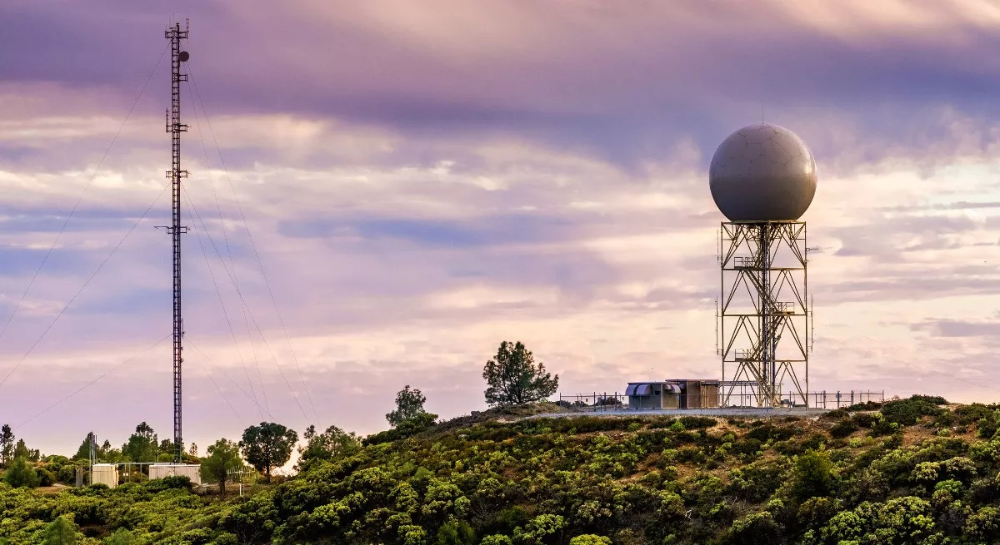
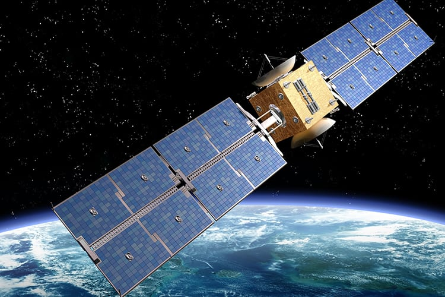
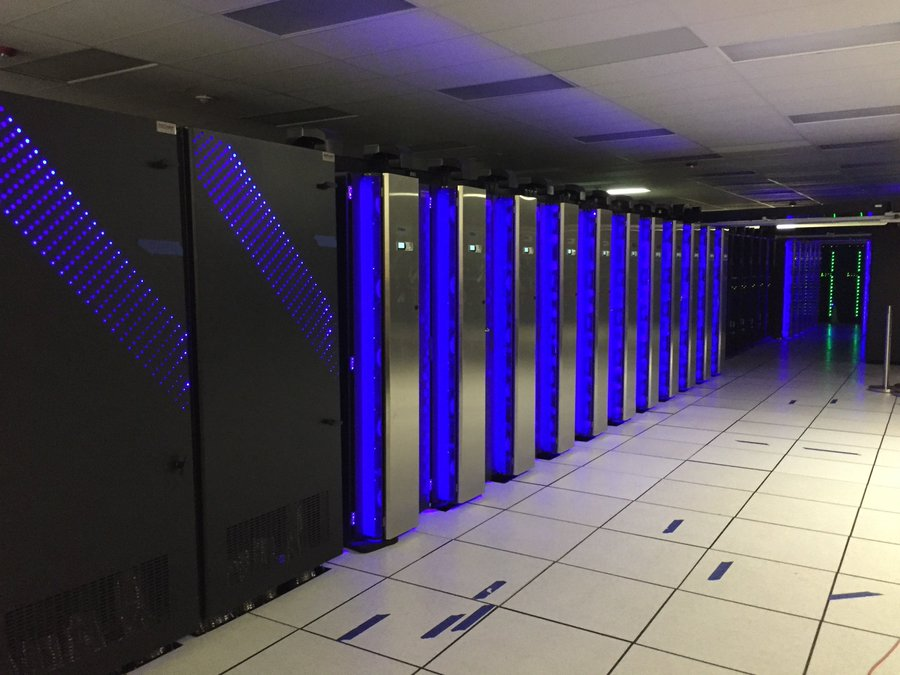
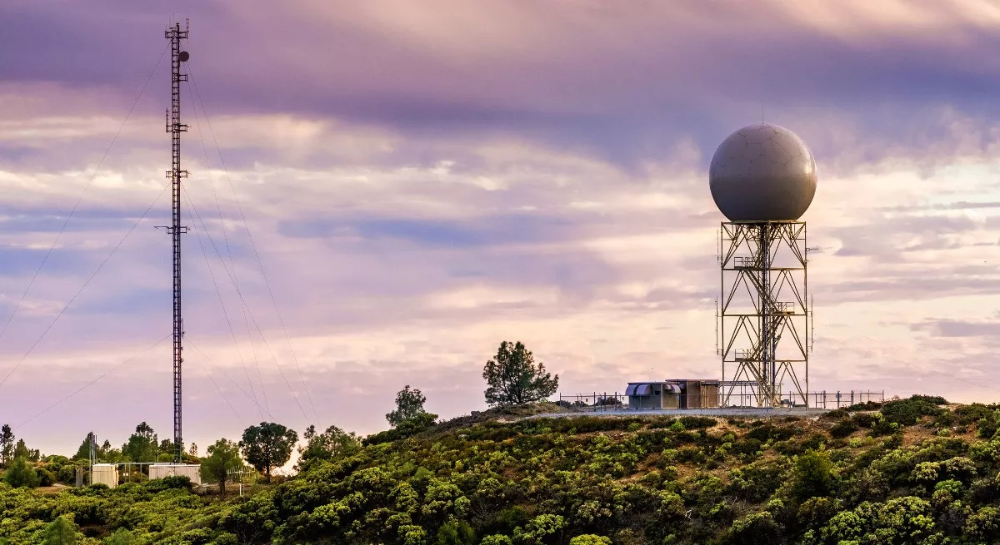
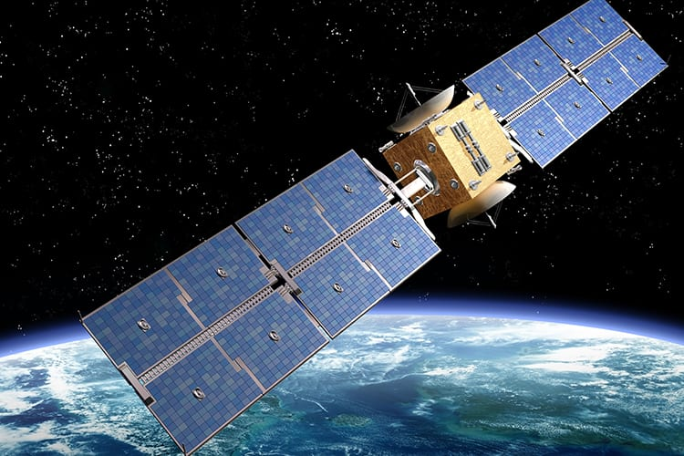
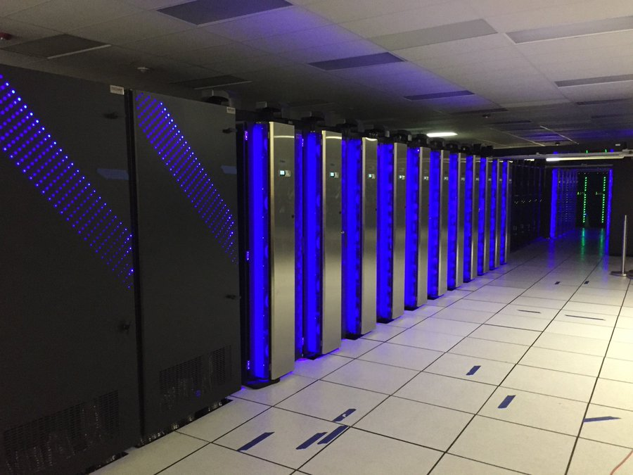
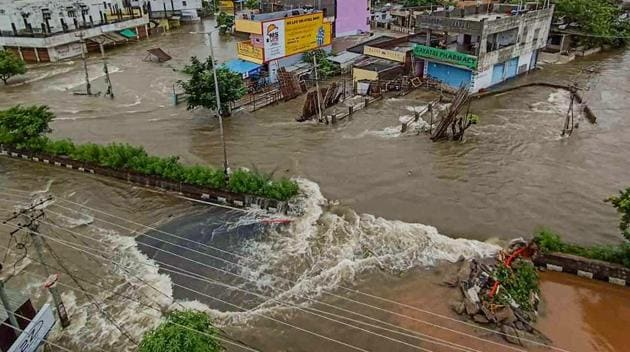
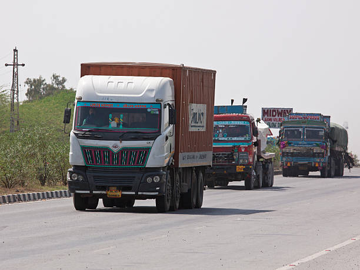

WHAT IS WEATHER FORECAST ?
.jpeg)
Weather Forecasting is a prediction of the state of atmosphere for a given location using the application of service and technology. This includes temperature, rain, cloudiness, windspeed and humidity. Weather Warning are special kind of short Range Forecast carried out for the Protection of Human life.
A Weather Map also known as Synoptic Weather Chart displays various meteorological features across a particular area at a particular point. Such maps have been in use since the mid 19th century and are used for weather forecasting purpose.
TOOLS USED FOR WEATHER FORECAST
- There are Various Tools Used For Weather Forecasting :-
-
Doppler radar

Weather radar, also called weather surveillance radar (WSR) and Doppler weather radar, is a type of radar used
to locate precipitation, calculate its motion, and estimate its type (rain, snow, hail etc.). Modern weather radars
are mostly pulse-Doppler radars, capable of detecting the motion of rain droplets in addition to the intensity of the precipitation
Doppler radar detects all types of precipitation, the rotation of thunderstorm clouds, airborne tornado debris,
and wind strength and direction.
-
Satellite Data

Satellite data provides satellite imagery and earth observation data of the earth's surface and its atmosphere.
Satellites also provide images of other planets. Resolution images of the earth indicate changes in land cover,
cloud cover, ocean levels, ice cover, and atmospheric composition. This data is used for tracking weather patterns
and climate changes. It is also used for powering multiple research projects.
-
Super Computers

The supercomputers are primarily used to generate forecast models, which are used by meteorologists around to country to
create their own weather forecasts.
Prathyush and Mihir are the supercomputers established at Indian Institute of Tropical Meteorology (IITM), Pune and National Centre for Medium Range Weather Forecast (NCMRWF), Noida respectively.

Weather radar, also called weather surveillance radar (WSR) and Doppler weather radar, is a type of radar used to locate precipitation, calculate its motion, and estimate its type (rain, snow, hail etc.). Modern weather radars are mostly pulse-Doppler radars, capable of detecting the motion of rain droplets in addition to the intensity of the precipitation Doppler radar detects all types of precipitation, the rotation of thunderstorm clouds, airborne tornado debris, and wind strength and direction.

Satellite data provides satellite imagery and earth observation data of the earth's surface and its atmosphere. Satellites also provide images of other planets. Resolution images of the earth indicate changes in land cover, cloud cover, ocean levels, ice cover, and atmospheric composition. This data is used for tracking weather patterns and climate changes. It is also used for powering multiple research projects.

The supercomputers are primarily used to generate forecast models, which are used by meteorologists around to country to create their own weather forecasts.
Prathyush and Mihir are the supercomputers established at Indian Institute of Tropical Meteorology (IITM), Pune and National Centre for Medium Range Weather Forecast (NCMRWF), Noida respectively.
Benefits of Weather Forecast
-
Public Safety
Weather forecasts are critical for public safety, especially during severe weather events. They help emergency services plan for and respond to disasters such as floods, hurricanes, and wildfires.
Cyclone Amphan (2020): In May 2020, Cyclone Amphan hit the eastern coast of India, affecting the states of West Bengal and Odisha. The India Meteorological Department (IMD) provided accurate weather forecasts and warnings in advance, which helped the authorities to evacuate over 3.3 million people and prepare for the storm. Due to these efforts, the loss of life was limited -
Travelling

The tourism industry relies heavily on weather forecasts to plan for and promote various outdoor activities and events. Accurate weather forecasts can help attract visitors and increase revenue.
-
Agriculture

Farmers rely heavily on weather forecasts to plan their crop planting and harvesting schedules, as well as to make decisions about irrigation, fertilization, and pest control. Accurate weather forecasts can help increase crop yields and reduce losses due to weather-related disasters.
-
Transportation
Weather forecasts are essential for transportation planning, including air travel, shipping, and road and rail transportation. They help prevent accidents, delays, and cancellations, which can have a significant economic impact.